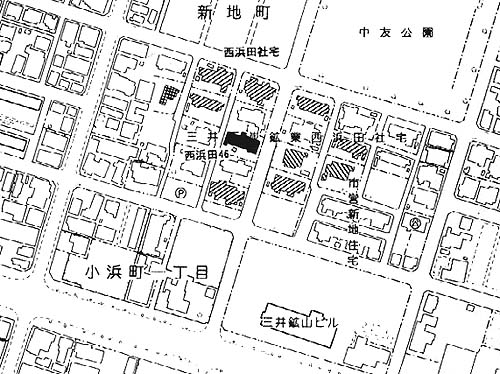

平成１６年１０月１日現在は、
（2003年9月22日撮影） かつては2戸建て住宅が中央道路両側に広がっていた。1戸の間取りは、1畳・4.5畳・1.5板敷・4.5畳。 正面ビルは、三井鉱山ビル。左に見える長屋風平屋建て住宅は、市営新地住宅。  （三井三池炭鉱西浜田社宅配置図）
かつては2戸建て住宅が中央道路両側に広がっていた。1戸の間取りは、1畳・4.5畳・1.5板敷・4.5畳。 正面ビルは、三井鉱山ビル。左に見える長屋風平屋建て住宅は、市営新地住宅。
（三井三池炭鉱西浜田社宅配置図）